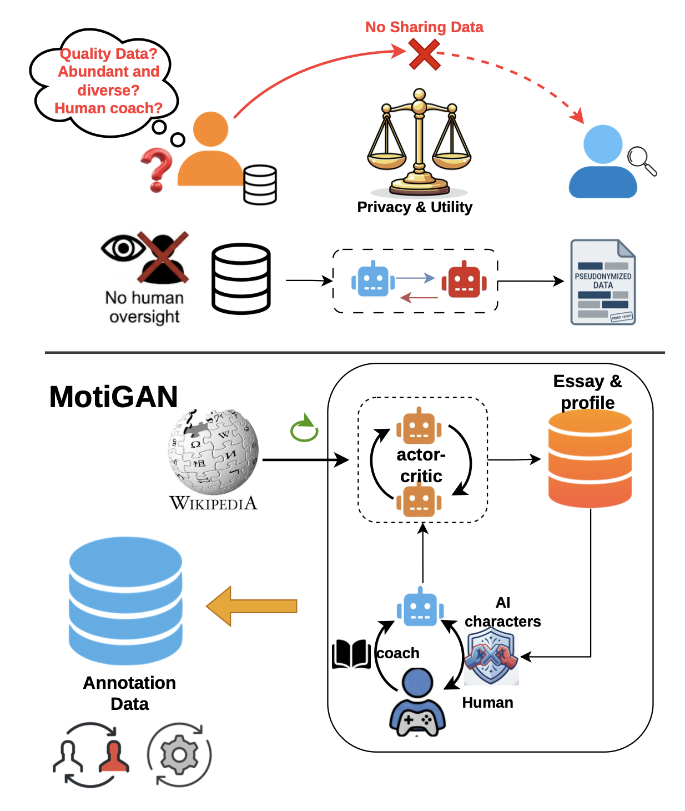
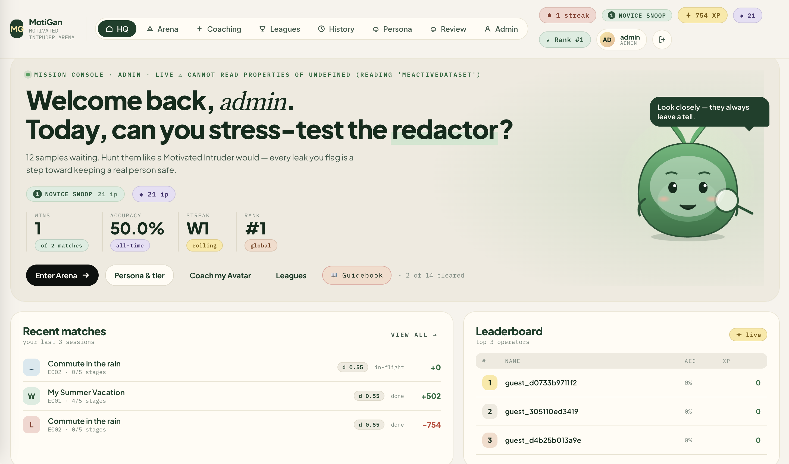

Re-identification methods serve as a concrete instantiation of the Motivated Intruder Test in privacy-preserving problems. State-of-the-art attack techniques rely heavily on Large Language Models (LLMs), which are simultaneously key components in constructing robust pseudonymisation safeguards. Building effective privacy mechanisms requires rich, high-quality training datasets - yet public domain data is scarce and direct human supervision is expensive.
To bridge this gap, we introduce MotiGAN: a gamified framework that re-imagines the motivated intruder test as a competitive, multi-agent tournament. Human players and AI characters continuously interact to discover privacy leaks, validate candidate pseudonymisations, and produce high-quality, annotated privacy datasets.

The MotiGAN web platform turns text privacy assessment into an interactive competitive arena. Operators step into the role of a Motivated Intruder to stress-test redactor models, flag residual leaks, and earn rewards while generating fine-grained annotations for training.

Play through text samples to uncover hidden leaks left behind by automated redactors. Gain XP, build winning streaks, and advance through intruder tiers from Novice Snoop upwards.
Train customized AI avatars using your gameplay choices. Evaluate model redactions, offer actor-critic feedback, and guide agent behavior to automatically detect privacy risks.
Compete on live global leaderboards against other human annotators and AI agents. Match history tracks your historical accuracy, win rate, and total points earned.
Every match session produces crowdsourced, verified privacy annotations. Human feedback feeds back directly into retraining pseudonymisation LLMs and improving redactor performance.
Through multi-population tournament gameplay, the platform generates a comprehensive dataset ($\mathcal{D}$) designed for training and evaluating text pseudonymisation models.